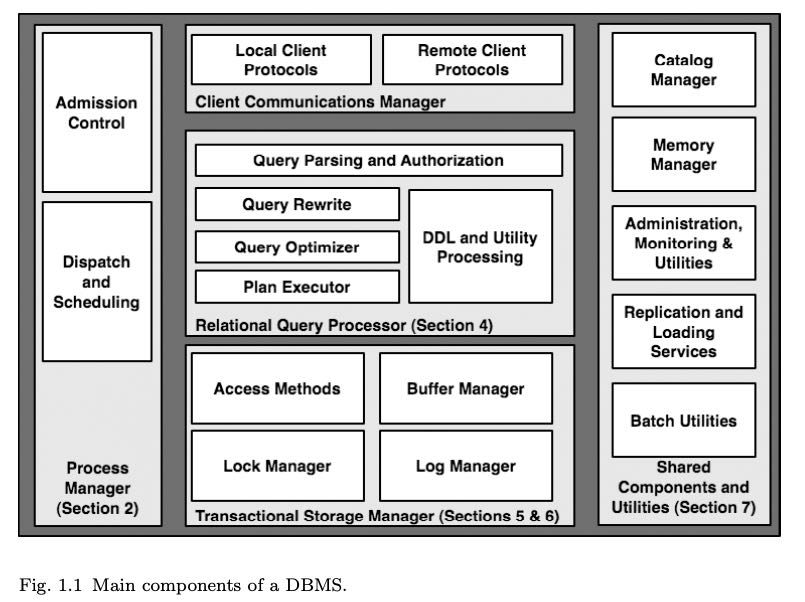

Architecture of a Database System
Table of Contents
1. Introduction
数据库体系结构很少为人所知（现在应该会好多了），一方面是因为市场竞争的原因导致只有几个竞争者在高端市场存活下来，所以这方面就业的人也比较少，大家都相互认识并且几乎毕业于相同的学校；另外一个原因是教科书主要探讨一些理论方面的东西，很少会将系统结构和实现整体进行分析。
For a number of reasons, the lessons of database systems architec- ture are not as broadly known as they should be. First, the applied database systems community is fairly small. Since market forces only support a few competitors at the high end, only a handful of successful DBMS implementations exist. The community of people involved in designing and implementing database systems is tight: many attended the same schools, worked on the same influential research projects, and collaborated on the same commercial products. Second, academic treat- ment of database systems often ignores architectural issues. Textbook presentations of database systems traditionally focus on algorithmic and theoretical issues — which are natural to teach, study, and test — without a holistic discussion of system architecture in full implementa- tions. In sum, much conventional wisdom about how to build database systems is available, but little of it has been written down or commu- nicated broadly.
文章后面也是按照图中组件进行讨论：
- Process Manager
- Relational Query Processor
- Transaction Storage Manager
- Shared Components & Utilities

2. Process Models
这节没有什么好说的，进程，线程，进程池和线程池，以及用户线程。其实线程池是不错的选择，只不过在早期操作系统分化比较严重，没有POSIX-compatible threads实现，可能性能以及隔离性也存在某些问题，所以许多DBMS最开始还是喜欢用进程池，直到标准threads出现。不过在分布式系统流行的今天，一些之前类似进程池模型又重新被提出来。
One theme emerging in these designs is to break down a server system into a set of independently scheduled “engines,” with messages passed asynchronously and in bulk between these engines. This is something like the “process pool” model above, in that worker units are reused across multiple requests. The main novelty in this recent research is to break the functional granules of work in a more narrowly scoped task-specific manner than was done before. This results in many-to-many relationship between workers and SQL requests — a single query is processed via activities in multiple workers, and each worker does its own specialized tasks for many SQL requests. This architecture enables more flexible scheduling choices — e.g., it allows dynamic trade-offs between allowing a single worker to complete tasks for many queries (perhaps to improve overall system throughput), or to allow a query to make progress among multiple workers (to improve that query’s latency). In some cases this has been shown to have advantages in processor cache locality, and in the ability to keep the CPU busy from idling during cache misses in hardware. Further investigation of this idea in the DBMS context is typified by the StagedDB research project [35], which is a good starting point for additional reading.
Admission Control准入控制：如何评估当前资源使用情况，是否让新的query进来执行。app-level层面是一回事，dbms core-level这层面则是另外一回事。目前来看内存使用估计是比较靠谱的手段，或者说因为memory不够造成的trashing对性能影响最大（相比CPU/disk IO来说）
Hence any good multi-user system has an admission control policy, which does not accept new work unless sufficient DBMS resources are available. With a good admission controller, a system will display graceful degradation under overload: transaction latencies will increase proportionally to the arrival rate, but throughput will remain at peak.
The second layer of admission control must be implemented directly within the core DBMS relational query processor. This execution admission controller runs after the query is parsed and optimized, and determines whether a query is postponed, begins execution with fewer resources, or begins execution without additional constraints. The exe- cution admission controller is aided by information from the query optimizer that estimates the resources that a query will require and the current availability of system resources. In particular, the opti- mizer’s query plan can specify (1) the disk devices that the query will access, and an estimate of the number of random and sequential I/Os per device, (2) estimates of the CPU load of the query based on the operators in the query plan and the number of tuples to be processed, and, most importantly (3) estimates about the memory footprint of the query data structures, including space for sorting and hashing large inputs during joins and other query execution tasks. As noted above, this last metric is often the key for an admission controller, since memory pressure is typically the main cause of thrashing. Hence many DBMSs use memory footprint and the number of active DBMS workers as the main criterion for admission control.
3. Parallel Architecture: Processes and Memory Coordination
几种并行架构：
- shared memory
- shared nothing
- shared disk
为什么之前大家喜欢买high-end shared memory DBMS呢？这个东西可以卖得贵，相比硬件成本来说溢价比较高；而对于买方来说，大头开始不在这里，而在于DBA，少量机器DBA可以维护得过来。
High-end machines can ship with dozens of processors, but tend to be sold at a large premium relative to the processing resources provided. Highly parallel shared-memory machines are one of the last remaining “cash cows” in the hardware industry, and are used heavily in high-end online transaction processing applications. The cost of server hardware is usu- ally dwarfed by costs of administering the systems, so the expense of buying a smaller number of large, very expensive systems is sometimes viewd to be an acceptable trade-off.
The dominant cost for DBMS customers is typically paying qualified people to adminis- ter high-end systems. This includes Database Administrators (DBAs) who configure and maintain the DBMS, and System Administrators who configure and maintain the hard- ware and operating systems.
shared-nothing架构扩展性好并且成本低，实现上需要处理partial failure.
The shared-nothing architecture is fairly common today, and has unbeatable scalability and cost characteristics. It is mostly used at the extreme high end, typically for decision-support applications and data warehouses. In an interesting combination of hardware architectures, a shared-nothing cluster is often made up of many nodes each of which is a shared-memory multi-processors.
shared-disk架构理解起来比较简单，计算节点可以随时失效，但是对于存储系统可用性要求高(RAID/SAN)。实现上需要有类似cache-coherency protocol以及coordinator来保证多个节点读写的一致性。
A shared-disk parallel system (Figure 3.3) is one in which all processors can access the disks with about the same performance, but are unable to access each other’s RAM. This architecture is quite common with two prominent examples being Oracle RAC and DB2 for zSeries SYS- PLEX. Shared-disk has become more common in recent years with the increasing popularity of Storage Area Networks (SAN). A SAN allows one or more logical disks to be mounted by one or more host systems making it easy to create shared disk configurations.
One potential advantage of shared-disk over shared-nothing systems is their lower cost of administration. DBAs of shared-disk systems do not have to consider partitioning tables across machines in order to achieve parallelism. But very large databases still typically do require partitioning so, at this scale, the difference becomes less pronounced. Another compelling feature of the shared-disk architecture is that the failure of a single DBMS processing node does not affect the other nodes’ ability to access the entire database. This is in contrast to both shared-memory systems that fail as a unit, and shared-nothing sys- tems that lose access to at least some data upon a node failure (unless some alternative data redundancy scheme is used). However, even with these advantages, shared-disk systems are still vulnerable to some single points of failure. If the data is damaged or otherwise corrupted by hard- ware or software failure before reaching the storage subsystem, then all nodes in the system will have access to only this corrupt page. If the storage subsystem is using RAID or other data redundancy tech- niques, the corrupt page will be redundantly stored but still corrupt in all copies.
Because no partitioning of the data is required in a shared-disk sys- tem, data can be copied into RAM and modified on multiple machines. Unlike shared-memory systems, there is no natural memory location to coordinate this sharing of the data — each machine has its own local memory for locks and buffer pool pages. Hence explicit coordination of data sharing across the machines is needed. Shared-disk systems depend upon a distributed lock manager facility, and a cache-coherency pro- tocol for managing the distributed buffer pools [8]. These are complex software components, and can be bottlenecks for workloads with sig- nificant contention. Some systems such as the IBM zSeries SYSPLEX implement the lock manager in a hardware subsystem.
下面是几个当前业界实现：
- Shared-Memory : All ma jor commercial DBMS providers support shared memory parallelism including: IBM DB2, Oracle, and Microsoft SQL Server.
- Shared-Nothing: This model is supported by IBM DB2, Informix, Tandem, and NCR Teradata among others; Green-plum offers a custom version of PostgreSQL that supports shared-nothing parallelism.
- Shared-Disk: This model is supported by Oracle RAC, RDB (acquired by Oracle from Digital Equipment Corp.), and IBM DB2 for zSeries amongst others.
IBM sells multiple different DBMS products, and chose to imple- ment shared disk support in some and shared nothing in others. Thus far, none of the leading commercial systems have support for both shared-nothing and shared-disk in a single code base; Microsoft SQL Server has implemented neither.
4. Relational Query Processor
选择度估计很长一段时间不太受重视，原因在于benchmark(TPC-D, TPC-H)设计上column都是相互独立的，所以大家也没有动力去将选择度估计做好。TPC-DS在设计上就将column之间的dependency考虑进去了。
Selectivity estimates for joins of base tables can be made by “joining” the histograms on the join columns. To move beyond single-column histograms, more sophisti- cated schemes to incorporate issues like dependencies among columns have recently been proposed [16, 69]. These inno- vations have begun to show up in commercial products, but considerable progress remains to be made. One reason for the slow adoption of these schemes was a longstanding flaw in many industry benchmarks: the data generators in bench- marks like TPC-D and TPC-H generated statistically inde- pendent values in columns, and hence did not encourage the adoption of technology to handle “real” data distributions. This benchmark flaw has been addressed in the TPC-DS benchmark [70]. Despite slow adoption rates, the benefits of improved selectivity estimation are widely recognized. Ioan- nidis and Christodoulakis noted that errors in selectivity early in optimization propagate multiplicatively up the plan tree and result in terrible subsequent estimations [45].
不论是top-down还是bottom-up效果都是很不错的，同时也都很费内存，所以没有必要在这个上面纠结很久，虽然我连bottom-up是如何实现的也不太清楚。
Search Algorithms: Some commercial systems, notably those of Microsoft and Tandem, discard Selinger’s dynamic pro- gramming optimization approach in favor of a goal-directed “top-down” search scheme based on the techniques used in Cascades [25]. Top-down search can in some instances lower the number of plans considered by an optimizer [82], but can also have the negative effect of increasing optimizer memory consumption. If practical success is an indication of quality, then the choice between top-down search and dynamic pro- gramming is irrelevant. Each has been shown to work well in state-of-the-art optimizers, and both still have runtimes and memory requirements that are, unfortunately, exponential in the number of tables in a query.
self-tuning这个功能完全取决于产品定位：有经验的DBA已经将数据库调教好了，那么就不希望优化器再做额外的优化工作；相反如果没有专门的DBA或者是不想太考虑这方面，那么有self-tuning功能自然最好。
This philosophical distinction arises from differences in the histor- ical customer base for these products. IBM traditionally focused on high-end customers with skilled DBAs and application programmers. In these kinds of high-budget IT shops, predictable performance from the database is of paramount importance. After spending months tun- ing the database design and settings, the DBA does not want the opti- mizer to change it unpredictably. By contrast, Microsoft strategically entered the database market at the low end. As a result, their customers tend to have lower IT budgets and expertise, and want the DBMS to “tune itself” as much as possible.
对于OLAP系统来说，下面几个东西不可少：
- bulk load/mvcc 否则update/query相互影响
- MV(materialized view) 物化视图算是预聚合
As such, it is crucial that data warehouses be bulk-loadable very quickly. Although one could program warehouse loads with a sequence of SQL insert statements, this tactic is never used in practice. Instead a bulk loader is utilized that will stream large numbers of records into storage without the overhead of the SQL layer, and taking advantage of special bulk-load methods for access methods like B+-trees. In round numbers, a bulk loader is an order of magnitude faster than SQL inserts, and all major vendors offer a high performance bulk loader.
Both issues can be circumvented by avoiding update-in-place, and providing historical queries. If one keeps before and after values of updates, suitably timestamped, then one can provide queries as of a time in the recent past. Running a collection of queries as of the same historical time will provide compatible answers. Moreover, the same historical queries can be run without setting read locks.
There are three aspects to Materialized View use: (a) selecting the views to materialize, (b) maintaining the freshness of the views, and (c) considering the use of materialized views in ad-hoc queries. Topic (a) is an advanced aspect of the automatic database tuning we mentioned in Section 4.3. Topic (c) is implemented to varying extents in the various products; the problem is theoretically challenging even for simple single-block queries [51], and moreso for generic SQL with aggregation and subqueries. For (b), most vendors offer multiple refresh techniques, ranging from performing a materialized view update on each update to the tables from which the materialized view is derived, to periodically discarding and then recreating the materialized view.
PG相比MySQL的query optimizer更加负责，MySQL optimizer侧重在优化简单查询上，为的是让结果可以快速返回。这个在阅读两个项目的优化器上要有所侧重
In the open source arena, PostgreSQL has a reasonably sophisti- cated query processor with a traditional cost-based optimizer, a broad set of execution algorithms, and a number of extensibility features not found in commercial products. MySQL’s query processor is far simpler, built around nested-loop joins over indices. The MySQL query opti- mizer focuses on analyzing queries to make sure that common opera- tions are lightweight and efficient — particularly key/foreign-key joins, outer-join-to-join rewrites, and queries that ask for only the first few rows of the result set. It is instructive to read through the MySQL manual and query processing code and compare it to the more involved traditional designs, keeping in mind the high adoption rate of MySQL in practice, and the tasks at which it seems to excel.
5. Storage Management
DBMS发展过程中有段时间喜欢操作raw device, 原因是更加高效，但是问题也蛮多的：没有办法使用文件系统相关命令，raw device和OS强绑定，还有就是越来越多的设备虽然虽然暴露raw device但是是虚拟出来的。所以这种实现逐渐地被淘汰出去了。OS设计上也逐渐考虑到这种spatiality, 把逻辑上相关的数据在物理上也尽量放置在一起。现在还使用raw device的话主要还是为了用来跑分。
The best way for the DBMS to control spatial locality of its data is to store the data directly to the “raw” disk device and avoid the file system entirely. This works because raw device addresses typically correspond closely to physical proximity of storage locations. Most com- mercial database systems offer this functionality for peak performance. This technique, although effective, does have some drawbacks. First, it requires the DBA to devote entire disk partitions to the DBMS, which makes them unavailable to utilities (backups, etc.) that need a filesystem interface. Second, “raw disk” access interfaces are often OS- specific, which can make the DBMS more difficult to port. This is a hurdle, however, that most commercial DBMS vendors overcame years ago. Finally, developments in the storage industry like RAID, Storage Area Networks (SAN), and logical volume managers have become pop- ular. We are now at a point where “virtual” disk devices are the norm in most scenarios today — the “raw” device interface is actually being intercepted by appliances or software that reposition data aggressively across one or more physical disks. As a result, the benefits of explicit physical control by the DBMS have been diluted over time.
An alternative to raw disk access is for the DBMS to create a very large file in the OS file system, and to manage positioning of data as offsets in that file. The file is essentially treated as a linear array of disk-resident pages. This avoids some of the disadvantages of raw device access and still offers reasonably good performance. In most popular file systems, if you allocate a very large file on an empty disk, the offsets in that file will correspond fairly closely to physical prox- imity of storage regions. Hence this is a good approximation to raw disk access, without the need to go directly to the raw device inter- face. Most virtualized storage systems are also designed to place close offsets in a file in nearby physical locations. Hence the relative con- trol lost when using large files rather than raw disks is becoming less significant over time. Using the file system interface has other ram- ifications regarding temporal control, which we discuss in the next subsection.
内存数据库不断发展，加上内存带宽和CPU速度不匹配，造成process on compressed in-memory data非常必要。
Another traditional topic that has recently come to the fore is com- pression of database data. Early work on the topic focused on on-disk compression to minimize disk latencies during read, and maximize the capacity of the database buffer pool. As processor performance has improved and RAM latencies have not kept pace, it has become increas- ingly important to consider keeping data compressed even during com- putations, so as to maximize the residency of data in processor caches as well. But this requires compressed representations that are amenable to data processing, and query processing internals that manipulate com- pressed data. Another wrinkle in relational database compression is that databases are reorderable sets of tuples, whereas most work on compression focuses on byte streams without considering reordering. Recent research on this topic suggests significant promise for database compression in the near future [73].
6. Transactions: Concurrency Control and Recovery
事务可能是DBMS里面牵扯组件最多的部分，可能也是最难的部分，精通它需要学习不少东西。当然我看这章也是跳着看的，好多东西太复杂太抽象也太无聊。
The truly monolithic piece of a DBMS is the transactional storage manager that typically encompasses four deeply intertwined components:
- A lock manager for concurrency control.
- A log manager for recovery.
- A buffer pool for staging database I/Os.
- Access methods for organizing data on disk.
A great deal of ink has been spilled describing the fussy details of transactional storage algorithms and protocols in database sys- tems. The reader wishing to become knowledgeable about these sys- tems should read — at a minimum — a basic undergraduate database textbook [72], the journal article on the ARIES log protocol [59], and at least one serious article on transactional index concurrency and log- ging [46, 58]. More advanced readers will want to consult Gray and Reuter’s textbook on transactions [30]. To really become an expert, this reading has to be followed by an implementation effort. We do not dwell on algorithms and protocols here, but rather survey the roles of these various components. We focus on the system infrastructure that is often ignored in the textbooks, highlighting the inter-dependencies between components that lead to much of the subtlety and complexity in making the simple protocols workable.
除了ANSI SQL隔离级别之外(read-uncommitted, read-committed, read-repeatable, serializable)，一些数据库厂商还提供：
- cursor stability. 不知道啥意思
- snapshot isolation.
- read consistency.看上去和SI很类似，但是每个read-value是按照第一次访问时候的结果，所以多个values之间可能是不一致的。也不知道理解对不对。
7. Shared Components
Catalog Manager虽然数据也是table, 但是使用上和relation tuples差异很大，并且许多组件都会使用到它(hot-path) 所以实现上可以使用特定的存储格式。有时候catalogs会特别大。
The basic catalog data is treated somewhat differently from normal tables for efficiency reasons. High-traffic portions of the catalog are often materialized in main memory as needed, typically in data struc- tures that “denormalize” the flat relational structure of the catalogs into a main-memory network of objects. This lack of data indepen- dence in memory is acceptable because the in-memory data structures are used in a stylized fashion only by the query parser and optimizer. Additional catalog data is cached in query plans at parsing time, again often in a denormalized form suited to the query. Moreover, catalog tables are often subject to special-case transactional tricks to minimize “hot spots” in transaction processing.
Catalogs can become formidably large in commercial applications. One major Enterprise Resource Planning application, for example, has over 60,000 tables, with between 4 and 8 columns per table, and typi- cally two or three indexes per table.
Context-based memory allocator
Memory allocation in commercial systems is made more efficient and easier to debug via the use of a context-based memory allocator.
A memory context is an in-memory data structure that maintains a list of regions of contiguous virtual memory, often called memory pools. Each region can have a small header that contains either a context label or a pointer to the context header structure.
Disk Management Subsystems
磁盘管理子系统需要了解磁盘介质的特性：SAN需要后备电源，因为可能会存在buffer; RAID则需要考虑写放大, bytestream-oriented storage, 以及盘失效时候的性能问题。这些东西到最后都不是透明的。
More complex is the code to handle device-specific details for main- taining temporal and spatial control as described in Section 4. A large and vibrant industry exists today based on complex storage devices that “pretend” to be disk drives, but that are in fact large hard- ware/software systems whose API is a legacy disk drive interface like SCSI. These systems include RAID systems and Storage Area Network (SAN) devices and tend to have very large capacities and complex performance characteristics. Administrators like these systems because they are easy to install, and often provide easily managed, bit-level reli- ability with fast failover. These features provide a significant sense of comfort to customers, above and beyond the promises of DBMS recov- ery subsystems. Large DBMS installations, for example, commonly use SANs.
Unfortunately, these systems complicate DBMS implementations. As an example, RAID systems perform very differently after a fault than they do when all disks are functioning correctly. This poten- tially complicates the I/O cost models for the DBMS. Some disks can operate in write-cache enabled mode, but this can lead to data corruption during hardware failure. Advanced SANs implement large battery-backed caches, in some cases nearing a terabyte, but these systems bring with them well over a million lines of microcode and considerable complexity. With complexity comes new failure modes and these problems can be incredibly difficult to detect and properly diagnose.
RAID systems also frustrate database designers by underperform- ing on database tasks. RAID was conceived for bytestream-oriented storage (a la UNIX files), rather than the page-oriented storage used by database systems. Hence RAID devices tend to underperform when compared with database-specific solutions for partitioning and repli- cating data across multiple physical devices. The chained decluster- ing scheme of Gamma [43], for example, roughly coincided with the invention of RAID and performs better for a DBMS environment. Further, most databases provide DBA commands to control the par- titioning of data across multiple devices, but RAID devices sub- vert these commands by hiding the multiple devices behind a single interface.
Many users configure their RAID devices to minimize space over- heads (“RAID level 5”), when the database would perform far, far better via simpler schemes like disk mirroring (“RAID level 1”). A par- ticularly unpleasant feature of RAID level 5 is that write performance is poor. This can cause surprising bottlenecks for users, and the DBMS vendors are often on the hook to explain or provide workarounds for these bottlenecks. For better or worse, the use (and misuse) of RAID devices is a fact that commercial DBMSs must take into account. As a result, most vendors spend significant energy tuning their DBMSs to work well on the leading RAID devices.
监控和资源隔离，可以使用类似virtual tables的方式来展现和操作
Monitoring, Tuning, and Resource Governers: It is not unusual, even in managed environments, for a query to con- sume more resources than desirable. Hence most DBMSs provide tools to assist administrators in identifying and pre- venting these kinds of problems. It is typical to provide a SQL-based interface to DBMS performance counters via “vir- tual tables,” which can show system status broken down by queries or by resources like locks, memory, temporary stor-age, and the like. In some systems, it is also possible to query historical logs of such data. Many systems allow alerts to be registered when queries exceed certain performance limits, including running time, memory or lock acquisition; in some cases the triggering of an alert can cause the query to be aborted. Finally, tools like IBM’s Predictive Resource Gover- nor attempt to prevent resource-intensive queries from being run at all.